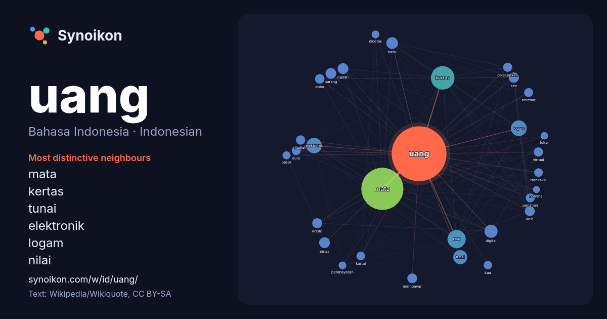

Bahasa Indonesia · Indonesian · popular word
uang
“money” · The words found around it in 1095 instances from Indonesian Wikipedia, Wikiquote.

Most distinctive neighbours
- mata 122×
- kertas 72×
- tunai 36×
- elektronik 34×
- logam 31×
- nilai 29×
- rupiah 22×
- digital 21×
- kripto 21×
- sen 20×
- koin 18×
- dolar 16×
- virtual 16×
- kartal 16×
- bank 15×
- pecahan 15×
- euro 15×
- beredar 15×
- membayar 14×
- barang 14×
× = how many times more often than in general Indonesian Wikipedia text.
Most frequent neighbours
- mata 352
- kertas 110
- nilai 66
- negara 50
- logam 49
- elektronik 47
- tunai 39
- digital 34
- bank 27
- indonesia 27
- orang 26
- memiliki 24
- barang 23
- emas 23
- kali 23
- rupiah 23
- resmi 22
- alat 21
- sen 21
- koin 20
In context
- Uang adalah alat tukar atau standar pengukur nilai (kesatuan hitungan) yang sah, dikeluarkan oleh pemerintah suatu negara berupa kertas, emas, perak, atau Wikipedia snippets · Uang
- Mata uang kripto aset digital yang dirancang untuk bekerja sebagai media pertukaran yang menggunakan kriptografi yang kuat untuk mengamankan transaksi Wikipedia snippets · Mata uang kripto
- … nting setelah New York dan London. Ekonomi berbasis jasa, dicirikan dengan pajak rendah dan perdagangan bebas, dan mata uang negara Wikipedia snippets · Hong Kong
- Mata uang Jepang memiliki sejarah yang mencakup periode dari abad ke-8 Masehi hingga saat ini. Setelah penggunaan tradisional beras sebagai media mata Wikipedia snippets · Mata uang Jepang
- Uang kertas ¥1,000 saat ini adalah uang kertas yen dengan nilai terendah dan telah digunakan sejak tahun 1945, tidak termasuk periode singkat dari tahun Wikipedia snippets · Uang kertas 1000 yen
- Selanjutnya, diikuti dengan uang kertas "Gulden Hindia Belanda" pada tahun 1815, dan "Uang Gulden De Javasche Bank" pada tahun 1827. Uang pecahan yang rendah Wikipedia snippets · Uang kertas rupiah
- … boratorium Forensik (Puslabfor), terdiri atas: Sekretariat (Set) Bagian Manajemen Mutu (Bagjemenmut) Bidang Dokumen dan Uang Wikipedia snippets · Badan Reserse Kriminal
- Mata uang virtual (uang virtual atau virtual currency) adalah mata uang digital yang sebagian besar tidak diatur oleh otoritas tertentu, dapat ditransfer Wikipedia snippets · Mata uang virtual
More Indonesian words
- air
- anjing
- bahasa
- emas
- iklim
- jantung
- jembatan
- kebenaran
- kehidupan
- kekuasaan
- keluarga
- kematian
- kereta
- kerja
- kesehatan
- kesenian
- kucing
- lingkungan
- makanan
- sains
- sejarah
- tuhan
Precomputed on 2026-10-09 with default settings (±5 words, medium corpus). The interactive map can refresh it with live data.